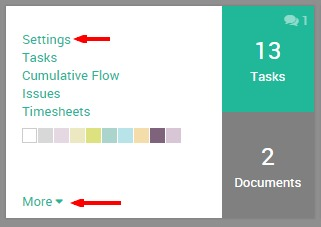
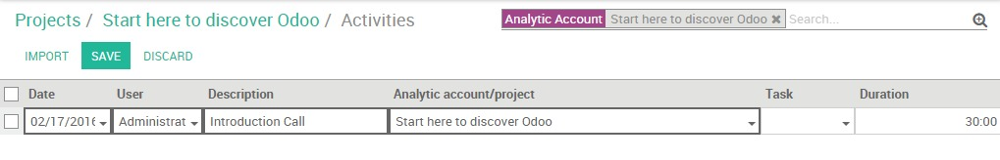
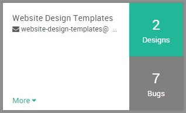
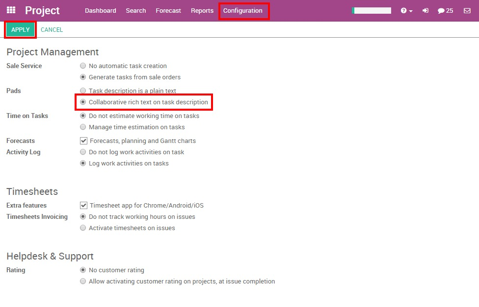

Responsibilities
In YuanCloud, you can assign the person who is in charge of the task.
When creating a task, by default you are responsible for it. You can change this by simply typing the username of someone else and choosing it from the suggestions in the drop down menu.
小技巧
If you add someone new, you can "Create & Edit" a new user on the fly. In order to do so, you need the administrator rights.
Followers
In a task, you can add other users as Followers. Adding a follower means that this person will be notified of any changes that might happen in the task. The goal is to allow outside contribution from the chatter. This can be invaluable when you need the advice of colleagues from other departments. You could also invite customers to take part in the task. They'll be notified by email of the conversation in the chatter, and will be able to take part in it simply by replying to the mail. The followers can see the whole task like you, with the description and the chatter.
Project: follow a project to follow the pipe
You can decide to follow a Project. In this situation, you'll be notified of any changes from the project: tasks sliding from one stage to another,conversation taking place,, etc. You'll receive all the information in your inbox. This feature is perfect for a Project Manager who wants to see the big picture all the time.
Task: follow a specific task
Following a task is the same idea as following a project, except you are focused on a specific part of the project. All notifications or changes in that task also appear in your inbox.
Choose which action to follow
You can choose what you want to follow by clicking on the down arrow in the Following button.
By default, you follow the discussions but you can also choose to be notified when a note is logged in, when a task is created, blocked or ready to go, and when the stage of the task has changed.

Time management: analytic accounts
Whether it helps you for estimation of future projects or data for billing or invoicing, time tracking in Project Management is a real plus.
The YuanCloud Timesheet app is perfectly integrated with YuanCloud Project and can help you track time easily.
Once YuanCloud Timesheet is installed, the timesheet option is automatically available in projects and on tasks.
To avoid any confusion, YuanCloud works with analytic accounts. An analytic account is the name that will always be the reference for a specific project or contract. Each time a project is created, an analytic account is automatically created under the same name.
Record a timesheet on a project:
Click on the settings of a project.
Click on the Timesheet button in the top grey menu.

You get the YuanCloud Timesheet. Click on Create and a line will appear with today's date and time. Your project name is automatically selected as the Analytic Account. No task is set, you can choose to add a specific task for it, or not.
If you go now to YuanCloud Timesheet, your line will be recorded among your other timesheets.
Record a timesheet on a task:
Within a task, the timesheet option is also available.
In the task, click on the Edit button. Go on the Timesheet tab and click on Add an item.
A line will appear with the name of the project already selected in the Analytic account.
Again, you'll find back these timesheet lines in the YuanCloud Timesheet application.

At the end of your project, you can get a real idea of the time you spent on it by searching based on the Analytic Account name of your project.
Document Management in tasks
You can manage documents related to tasks whether they're plans, pictures of the formatting, etc. An image is sometimes more informative than a thousand words! You have two ways to add a document to a task.
1. You can add an image/document to your task by clicking on the Attachment tab on the top of the form.

2. You can add an image/document to your task through the Chatter. You can log a note/send a message and attach a file to it. Or if someone sends an email with an attachment, the document will be automatically saved in the task.

小技巧
If you have an important image that helps to understand the tasks you can set it up as Cover Image. It'll show up in the Kanban view directly.

Collaborate on tasks
Tasks in YuanCloud Project are made to help you to work easily together with your colleagues. This helps you save time and energy.
The idea is to stay up to date with what interests you. You can collaborate with your colleagues by writing on the same task at the same time, with task delegation and the Chatter.
Create a task from an email
You can configure an email address linked to your project. When an email is sent to that address, it automatically creates a task in the first step of the project, with all the recipients (To/Cc/Bcc) as followers.
With YuanCloud Online, the mail gateway is already configured and so every project gets an automatic email address.
The email is always the name of the project (with "-" instead of the space), you'll see it under the name of your project in the Project Dashboard.
This email address create by default following the project name can be changed.
The alias of the email address can be changed by the project manager.
To do so, go to the Project Settings and click on the Email Tab.
You can directly edit your project email address.

The Chatter, status and follow-up.
The Chatter is a very useful tool. It is a communication tool and shows the history of the task.
In the Chatter, you can see when the task has been created, when it has passed from one stage to another, etc. Any changes made to that task are logged into the Chatter automatically by the system. It also includes the history of the interaction between you and your customer or colleagues. All interactions are logged on the chatter, making it easy for the task leader to remember past interactions.
You can interact with followers whether there are internal (your colleagues) or external (the client for example) by logging a note or important information. Also, if you want to send an email to all the followers of that specific task, you can choose to add a message to notify all of them. For both of these options, the date and time is saved on the entry.

The description of the task, the Pad
YuanCloud allows you to replace the task description field by an Etherpad collaborative note (http://etherpad.org). This means that you can collaborate on tasks in real time with several users contributing to the same content. Every user has their own color and you can replay the whole creation of the content.
To activate this option, go to , tick "Collaborative rich text on task description".
小技巧
If you just need the pad and not the whole task page, you can click on the icon on the top right to get to the pad directly. This also gives you the direct url of the task description: useful if you want to send it to someone without adding this person as a follower.
Tasks states
Set the state of a task
The status of the task is the easiest way to inform your colleagues when you are working on a task, if the task is ready or if it is blocked. It is a visual indicator that is seen in a glance.
You can change the status of the task from the kanban view or directly from the task. Just click on the status ball to get the choices:


Custom states
You can decide what the different status mean for each stage of your project. On the kanban view, click on the gear icon on the top of the stage, then click on edit:

Next to the color ball, write the explanation of the state.

Now, the explanation will be displayed instead of the generic text: